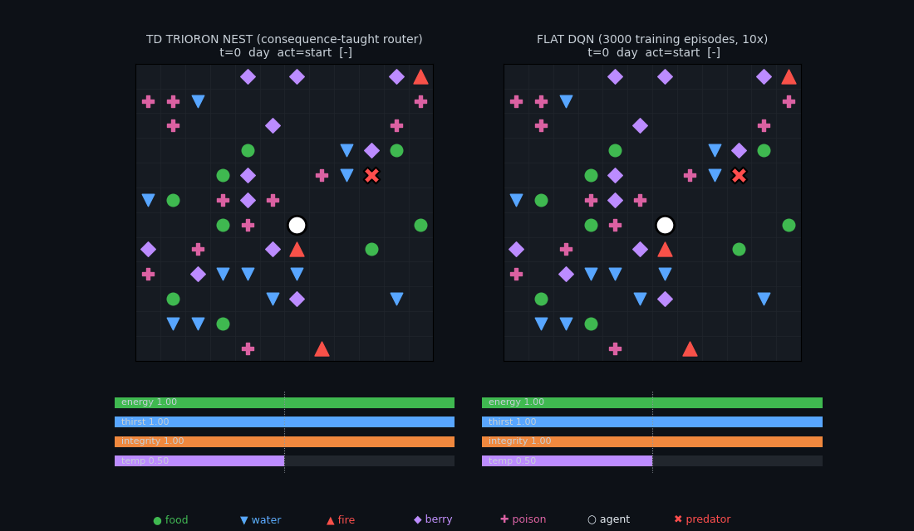

Both agents below face the same unseen survival world. The phasecyte nest (left) absorbed five skills — warm / flee / hydrate / forage / evade — by watching each skill master once: a single streaming pass per skill, no gradients, no replay buffer, ~15 seconds of CPU. A recognition router picks the skill each tick (shown live in the title bar). The DQN (right) trained for 300 episodes of reinforcement learning — and is the larger model: 27,270 parameters vs the nest's 19,383 (router + five leaves, 1.4× smaller).
A 12×12 toroidal tile world with a 20-tick day/night cycle. The agent moves N/S/E/W, consumes the tile it stands on, or rests. Nights are cold; fire is the only heat source — and also a hazard. A slow predator wanders the map (it moves every 4th tick; contact chips integrity). An episode ends at 300 ticks or at the agent's death. The four bars are the agent's drives, and each has a lethal condition:
| bar | restored by | lethal when |
|---|---|---|
| energy | eating food ● / berries ◆ | empty (0) — starvation |
| thirst | drinking water ▼ | empty (0) — dehydration |
| integrity | nothing — only avoid fire ▲, poison ✚, predator ✖ | empty (0) |
| temp | a homeostat: fire warms, night cools; setpoint 0.5 (the dotted line) | either end — empty freezes, full cooks. The bar turns red near a lethal bound. |
So an agent that dies "with its bars full" almost always hit a temperature bound — the classic flat-policy failure: it learns "fire = survival at night," camps it, and cooks. Warming is a sign-flip skill (approach fire when cold, retreat when warm), which the nest carries as two separate leaves — WARM seeks, FLEE cools — with the router doing the flip.
| agent | training | mean | median | per-map σ | worst | dead ≤20 | reach t≥67 |
|---|---|---|---|---|---|---|---|
| flat DQN | 300 episodes of TD | 34.9 | 38 | 15.0 | 11 | 10 / 40 | 1 / 40 |
| phasecyte wake-nest | one gradient-free pass per skill (~1 min) | 50.0 | 43 | 12.7 | 18 | 1 / 40 | 8 / 40 |
| + overnight dream | offline, self-generated pseudo-data only | 54.4 | 57.5 | 12.8 | 19 | 1 / 40 | 16 / 40 |
The distributions say more than the means. The DQN's modal death is t = 13 — it dies in the first minute on a quarter of maps (the fire-exploration trap); the nests hit that regime once in forty, worst case 18. Deaths cluster at the day/night boundaries (t = 43 and 67 with a 20-tick day): the wake nest piles up at nightfall of day two, and dreaming moves 8 more maps through a full extra day/night cycle (median 43 → 57.5). Nobody in this cohort beats the second night — the consequence-taught nest (148.5 n=3) and the hand-coded arbiter (167.6) live several days beyond it, which is the open headroom.
| survival, 40 maps | nested organism | flat DQN |
|---|---|---|
| quick budget | 47.4 ± 4.6 — one gradient-free pass (~1 min) | 37.9 ± 2.7 — 300 episodes of TD |
| optimized budget | 148.5 ± 12.9 — consequence-taught trioron router, 300 TD episodes over gradient-trained skill leaves | 49.0 ± 14.3 — 3000 episodes (10×) |
The same duel at the optimized budgets — the consequence-taught nest against the 10×-trained DQN, same unseen map:

At ten times the training budget, the DQN just reaches what the nest gets from a single pass — and the optimized nest sits 3× above that. One asymmetry to state plainly: the nest's leaves learn from skill demonstrations and the DQN learns tabula-rasa; a demonstration-warm-started DQN is the fully symmetric control we have not run.
Everything trains through the public package — the same API you can install:
pip install trioron # v0.3.0 from trioron.pcll import PhasecyteNest, dream_distill
Shows: runtime skill absorption. A phasecyte stores phase-coded evidence as running sums, so learning a skill is one pass over a demonstration — the sample-efficiency regime games actually live in. The nest structure (leaves + router) is what makes this work: the same skills flattened into one policy fail reproducibly.
Doesn't show (yet): the overnight dream — each phasecyte leaf distilling itself into a gradient trioron leaf on dreamed pseudo-data — is a wash in this world so far (+2.0 ± 3.8 survival). On the harder 15-task classification benchmark the same mechanism beats its teacher in 9 of 9 cases; wiring that gain into the world is open work. The hand-coded ceiling (167.6) and the consequence-taught router (148.5 ± 12.9, n=3) show how much headroom remains.